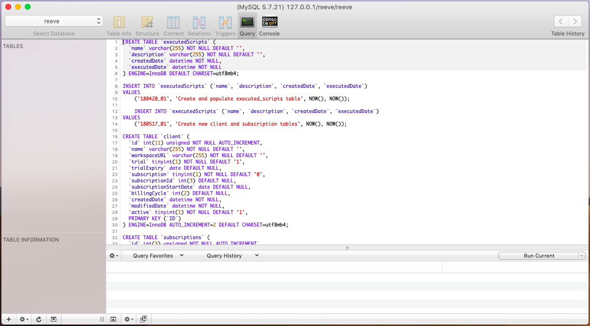
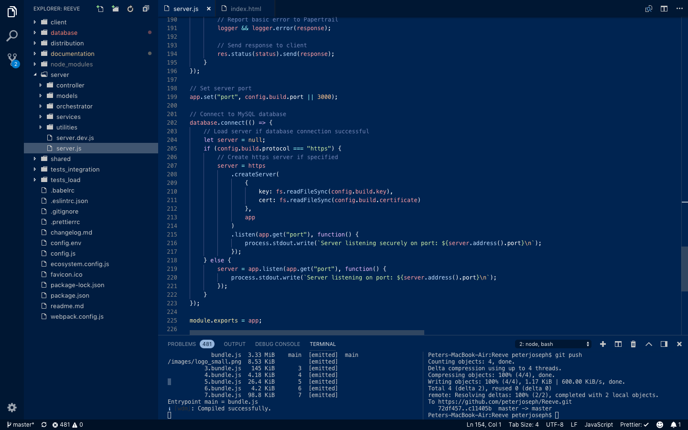

1.0 Introduction
Reeve is a Node.js boilerplate framework designed to reduce setup time, and mitigate risk when building scalable web applications.
Many web applications depend on commonly found, generic functionality. This can include -
- User authentication and account management.
- Payment and subscriptions.
- Routing and page management.
- Internationalization (translations).
- Security.
- Access and usage logging.
- Error reporting.
Reeve aims to provide a robust set of solutions to these areas (and more), so that the focus can return to rapid prototyping and feature delivery.
Using pre-packaged solutions to common problems found early in the development process, developers can focus on the core features of the product directly, and avoid building secondary functionality that is expected, but not critical of the primary product features.
Why would someone want this?
Developing a software product is expensive and time-consuming. By using a framework, you can ensure consistency and enforce commonality across multiple products being developed in parallel.
If you are outsourcing, you can reduce risk by standardizing how a product should be developed and enforcing practices that might not be used if you asked a developer to start from scratch.
2.0 Core Features
Reeve was designed to abstract away a lot of the common functionality found in web applications that doesn't directly contribute to the primary "solution". These features include -
User Accounts: Common utility pages for logging in, registering client accounts, sending emails when a user forgets their password, and verifying email addresses when new accounts are created.
Client Accounts: New user accounts are provisioned under a 'client'. A client is a group of users working together in an organisation. They can share resources and information, and collaborate with each other. The overarching client manages the subscription and payment handling for a group of users.
Client Specific Branding: Each client on the platform can have unique branding, and web address to access their resources. When a user navigates to a client page, they may see the client logo, background and colours specified by the client administrator.
Routing & Page Management: Pages on the platform can be restricted in their presentation, in a variety of ways. The developer can restrict pages to logged in, or unregistered users. They can require users to have a particular feature or role to view a page. Reeve handles the routing and page management to simply this process, and maintain security.
Translations: The email templates, front-end and back-end of the application support multi-language text translations with full i18n support. Clients can define a default language to display on the login page, and users can set a language specific to their account.
Subscription and Payment Gateway: Subscriptions are handled through a Stripe payment processor. When a new client is created, they are automatically placed on a 14 day trial period where they can use the app freely. After this period of time, they need to select a subscription and make ongoing payments to continue accessing the platform.
Feature Restrictions: The internal database and pages supports defining a series of features, and restricting them to certain clients or subscription types. Restrictions can be as granular as blocking objects on a page, to restricting access to entire routes/pages. An example of using this could include providing extra features to a client that is on a better subscription plan.
User Roles: User accounts can be assigned multiple roles which act as granular permissions to perform certain actions, view pages or objects.
Email Sending: Every user has an email address associated with their account, and the platform supports sending emails to them. These messages are structured using a translation-friendly templating system.
Session Management: An in-memory database is used to handle active user sessions for fast and efficient application performance.
Error Reporting: Activites, behaviours and system events throughout the platform can be recorded to external services such as Papertrail, or Sentry.
3.0 Technology Stack
Reeve relies on a variety of open source technologies to function. Key inter-connected services are listed in the table below with a short description of their purpose. It is strongly recommended that you review all the dependencies found in the package.json file in the root directory.
| Component | Dependencies |
|---|---|
| Front-End |
|
| Back-End |
|
| Database |
|
| Session Management |
|
| Development |
|
| Integration Testing |
|
4.0 Directory Layout
The Reeve directory layout is designed to be as simple and organised as possible. Most of the core application functionality is handled inside three directories.
- Client: Front-end content served to the user when using the application.
- Server: Code specific to the back-end and deployed on a node server/the cloud.
- Shared: Contains functions that are shared between both the client and server directories.
root directory
|____ client
|____|____ api
|____|____ common
|____|____|____ components
|____|____|____|____ inputs
|____|____|____ layouts
|____|____|____ media
|____|____|____|____ icons
|____|____|____|____|____ flags
|____|____|____ store
|____|____|____|____ reducers
|____|____|____ styles
|____|____|____|____ modules
|____|____ modules
|____|____|____ authentication
|____|____|____|____ components
|____|____|____ billing
|____|____|____|____ components
|____|____|____ dashboard
|____|____|____ header
|____|____|____|____ components
|____|____|____ profile
|____|____|____ settings
|____ database
|____|____ scripts
|____ distribution
|____|____ images
|____ documentation
|____ node_modules
|____ server
|____|____ controller
|____|____ models
|____|____ orchestrator
|____|____ services
|____|____ utilities
|____|____|____ errors
|____ shared
|____|____ translations
|____|____|____ countries
|____|____|____ currencies
|____|____|____ languages
|____|____|____ links
|____|____ utilities
|____|____ validation
|____ tests_integration
|____ tests_load
A more detailed breakdown and explanation of each of the directories and their purpose can be found below. Compare these directories with the notes below to better understand their purpose.
root directory: The root directory contains the node package file for starting node, and a series of configuration and property files. An environment file config.env contains build configuration information. webpack.config.js handles the configuration of webpack, bundling and building the files when node is started. There are also a number of configuration files to be used with your code editor for code styling and formatting.
/client/: The client directory contains content that is bundled together during development and served to users. At the root of the directory there is an index.js file, this injects React into the web-browser dom. The app.js file loads the router and other dependencies. The router.js file handles the react routing (using react-router v4) throughout the application.
/client/api/: Exported js functions that call the browser 'fetch' function to communicate with the api endpoints on the back-end are stored in this directory.
/client/common/: Common front-end functions that are shared across multiple pages within the client application.
/client/common/components/: A directory for storing common react page elements.
/client/common/components/inputs/: Shared react input elements. Fields, checkboxes and drop-downs. The advantage of using a single field component throughout the application is that you can update once and the changes will be visible everywhere.
/client/common/layouts/: Every page is wrapped in a 'layout' component. This component defines whether a header, navigation bar or sidebar should be visible along with the page content.
/client/common/media/: Visual front-end components (usually SVG's').
/client/common/media/icons/: A central repository of icons used throughout the application front-end.
/client/common/media/icons/flags/: SVG country flags.
/client/common/store/: This directory contains a store.js file which loads the Redux application state store. In the development environment, it also contains code that loads the React and Redux development tools.
/client/common/store/reducers/: All the Redux reducers are stored in this directory. Reducers specify how the Redux application state changes in response to actions that are sent to the store.
/client/common/styles/: A single entry.scss imports styling files (Sass - Syntactically awesome style sheets) from the modules directory. Webpack compiles these files into pure css during development and production. Sass provides a significant number of benefits over writing pure css.
/client/common/styles/modules/: The most significant file in this directory is _bootstrap_variations.scss which specifies the default styling and colours of the bootstrap css framework.
/client/modules/: Pages within the web-application are separated into unique directories and loaded in an asynchronous fashion. If you are creating a new page, most of the content should be stored in a sub-directory within this directory. The first file to be loaded is a index.js file which contains a react-router component. This component handles what should be visible on the page.
/client/modules/authentication/: Contains all of the pages and components for authentication. This includes, sign-in, registration, forgot password, reset password and verify email. The react-router component in index.js determines which one of these components should be visible.
/client/modules/authentication/components/: Shared components that are used in a particular page or group of pages, but are unlikely to be required across the whole application, should be stored in a 'components' directory.
/client/modules/billing/: Pages and components for presenting billing and subscription management to the end user.
/client/modules/billing/components/: Shared components that are used in a particular page or group of pages, but are unlikely to be required across the whole application, should be stored in a 'components' directory.
/client/modules/dashboard/: The first page that is presented to a user when they sign-in to an account.
/client/modules/header/: A navigation header that is shared across multiple pages throughout the app. The visibility of the header is determined by its use in the layouts directory 'client/common/layouts'.
/client/modules/header/components/: Shared components that are used in a particular page or group of pages, but are unlikely to be required across the whole application, should be stored in a 'components' directory.
/client/modules/profile/: A directory containing pages where users can update their personal information and add a profile picture.
/client/modules/settings/: This directory contains pages for handling client specific settings that are applied to all users within the client account.
/database/: The root database directory contains a series of directories pertaining to building the mysql database. There is a readme file that explains how to run the sql installation scripts.
/database/scripts/: As the product is developed and the underlying database is changed, database scripts containing the changes are included in this directory. Scripts are chronological in order so when new changes are introduced, you only have to run the latest scripts.
All scripts used to make database changes should be documented in this directory.
Every script records
an entry
in the 'executedScripts' database table, so you always know what scripts have already been run on the database.
/database/scripts/compiled/: All individual sql files are compiled into a single script and supplied in this directory. For sake of convenience, if you ever have to build a new database from scratch, you can use the one script.
When you add a new sql script to the `scripts` directory, you should also include it in this file.
/distribution/: The only directory that serves static files to users over the internet. When building for production, bundle.js files are created through webpack and stored in this directory. When a user navigates to the correct address, these resources are loaded.
/distribution/images/: This directory is for loading static image files. If you are displaying an image from the server to a user without using a distribution network, the images should all be located within this directory.
/documentation/: Contains reference material for using and developing the product.
/node_modules/: When the node command 'node install' is run, third-party dependencies used by Reeve are downloaded from the internet and stored here.
/server/: This directory contains the server specific code that is run on a node js server. The service is initialised via the server.js file. A separate file server.dev.js contains code specific to when the server is running in a development environment.
/server/controller/: The controller supplies and manages the 'routes' used by the server. When a request is sent to a route on the server, a permission check performed by restrictRoutes.js validates the request and passes the action to a function in one of the files in the orchestrator directory.
/server/models/: The sequelize ORM maps to the database through the models directory. Each database mapping is stored in a unique file in this directory and automatically loaded by the server.
/server/orchestrator/: The orchestrator directory is where data manipulation and communication with the database occurs.
/server/services/: Reeve depends on a variety of third-party services. These integrations are stored in separate files in the services directory, and imported via the server.js file located in the root directory.
/server/utilities/: Server specific utility functions. The file restrictRoutes.js handles the security of routes and whether an endpoint is accessible to a user. browserResponseLng.js Loads the accept-language from the request header. This is used for determining the language a response should be returned.
/server/utilities/errors/: Provides a common set of functions for cleanly presenting server errors to the client.
/shared/: The shared directory is used to share code between the client and the server. This is frequently used in translation and validation, where the inputs and outputs on the server are expected to be the same as what is presented on the client. A significant file in this directory is constants.js which provides a central location for static variables, ensuring values are not 'hard-coded' into multiple pages.
/shared/translations/: The translations directory contains code that initializes i18next with the correct translation strings. Inside this directory, the file i18n.js loads translation strings from a group of sub-directories. A number of utility functions are also provided in this file, used for displaying translation strings, changing the language and determining the currently active language.
/shared/translations/countries/: Country names translated into the language of the translation file.
/shared/translations/currencies/: Currencies translated into the language of the translation file.
/shared/translations/languages/: A collection of translation strings to be used with the i18next package. Translations are divided into separate files based on their language.
/shared/translations/links/: Translatable links that point to unique url's written in the language.
/shared/utilities: Common utility functions shared across the client and server. Date and subdomain manipulation, urls, security token handling and array manipulation.
/shared/validation/: A collection of validation objects used by the 'validate.js' package. Validation should be performed on the client and server, and these validation objects should be as complex as required to maintain the integrity of the application.
/tests_integration/: JMeter is a powerful software application designed to load-test and measure the performance of services. This directory contains a basic pre-made file to load-test Reeve. You will need to download and install JMeter separately.
/tests_load/: The javascript test runner 'ava' is heavily used for integration testing in Reeve. This involves testing the communication paths between the endpoints and the front-end to ensure they are all working correctly. All tests should be stored in the tests_integration directory. You can run the tests using the following command -
npm run test
5.0 Getting Started
In this section we will go over the required tools and installation steps for setting-up Reeve so you can start developing!
While the documentation will try to explain things in as simple terms as possible, we expects reasonable knowledge in a number areas.
Experience with Node JS, an understanding of ECMAScript 6, and useful functions including promises
and await/async. Working knowledge of Express and REST API's.
The documentation is written as a guide for installation on Unix systems. You will need to substitute some of the commands for Windows compatibility.
5.1 Node.js & NPM
Reeve is designed to work with Node v8.0.0 and later. If you don't have Node installed on your system, simply download the installer direct from the website. You can also install node using bash, or using a package manager such as homebrew or pkgsrc
curl "https://nodejs.org/dist/latest/node-${VERSION:-$(wget -qO- https://nodejs.org/dist/latest/ | sed -nE 's|.*>node-(.*)\.pkg.*|\1|p')}.pkg" > "$HOME/Downloads/node-latest.pkg" && sudo installer -store -pkg "$HOME/Downloads/node-latest.pkg" -target "/"
For the convenience of ensuring node is running on the latest version, you can also use a Node Version Manager such as nvm or n to maintain your node installation.
Once you have successfully installed node, you should be able to run the following commands without any problems.
$ node --version
v8.0.0
$ npm --version
6.4.1
If you haven't had any issues so far, node and npm should be working correctly. We can now setup Reeve.
From the directory that you saved/copied Reeve, we want to point our terminal to this directory so that we are working from the root. Usually you would do this as follows.
cd Reeve
Run the following command to download our node dependencies from the javascript package manager npmjs
npm install
Once the installation is complete, a new directory called node_modules should have been created in the root directory. This contains the node dependencies Reeve is reliant on.
We can now move on to setting up our sql and in-memory databases.
5.2 Building the Database
The MySQL development documentation has a very detailed guide on installing MySQL for various platforms. Please read the following article Getting Started with MySQL.
Once you have successfully installed MySQL, you should be able connect to the server using the mysql client through your terminal.
$ mysql -u root -p
If the connection was successful, you should receive a similar welcome message to the one below.
Welcome to the MySQL monitor. Commands end with ; or \g.
Your MySQL connection id is 4
Server version: 5.7.13 MySQL Community Server (GPL)
Run the following command in your terminal to see a list of existing databases.
mysql> SHOW DATABASES;
+--------------------+
| Database |
+--------------------+
| information_schema |
| mysql |
| performance_schema |
| sys |
+--------------------+
We now want to create a new database which will be used by Reeve.
mysql> CREATE DATABASE reeve;
Query OK, 1 row affected (0.01 sec)
As we will be importing scripts to build our database, we will have a significantly less painful experience using a graphical user interface over the terminal.
Most of the database management during the development of Reeve was handled by a mac program called Sequel Pro. An alternative software product for windows is HeidiSQL. If you installed MySQL through an installer, it is also quite possible you may have already installed MySQL Workbench on your machine.
Inside the directory database > scripts > compiled there is a single file called compiled.sql. We need to take the entire contents of this file and execute the contained scripts on our sql database.

The database directory also contains each individual script in chronological order since when they were last created. In the future, as new database changes are made, you don't want to have to rebuild the database from scratch, you only have to run the latest scripts that are yet to be installed.
Once our database is successfully built, we can now point Reeve to our database.
From the Reeve root directory, open the file called config.env. This file contains all the environmental variables used by the server. Populate the following section of the file with the details of the MySQL server you just created -
# MySQL Database
DB_HOST=localhost
DB_USER=root
DB_PASS=root
DB_SCHEMA=reeve
DB_POOL_MIN=0
DB_POOL_MAX=10
DB_POOL_ACQUIRE=30000
DB_POOL_IDLE=10000
Reeve should now be successfully interfacing with our MySQL database. We can now move on to setting up a Redis in-memory database to handle session management.
5.3 Running Redis
Redis is an in-memory database used by Reeve to store active user sessions. A user session is semi-permanent information that is required throughout a user interacting with Reeve, from login to logout. On logout this information is cleared.
To install Redis, read the following official quick-start guide.
Alternatively, if you are using a unix machine, one of the easiest ways to install Redis is using Homebrew (Mac OS) or Linuxbrew (Linux), with the command -
$ brew install redis
To start the Redis server you need to execute the redis-server binary as follows -
$ redis-server
Once these commands have been run, we now need to confirm if the redis-server is working correctly. Run the following command on the redis-cli. You should receive a 'PONG' response.
$ redis-cli ping
PONG
The final installation procedure involves mapping Reeve to Redis so the two systems can communicate with each other. In the Reeve root directory, open the file config.env and replace the following lines with the Redis database details.
# Redis Session Store
R_HOST=127.0.0.1
R_PORT=6379
R_PROXY=false
R_SECRET=redis_secret
R_SAVE_UNINITIALIZED=false
R_RESAVE=false
By default, the Redis host is 127.0.0.1 and the port is 6379.
5.4 Developing Locally
Reeve was developed using the flexible code editing software Visual Studio Code. VS Code is optimized for building web applications and includes a variety of useful integrations that make the development experience easier.
If you do decided to work with VS Code, we recommend a number of plugins to make your experience more enjoyable.
ESLint: JavaScript linting tool for identifying and reporting on code patterns, to maintain code quality.
Prettier - Code Formatter: Code formatting for Prettier.
Sass: Syntax highlighting and auto-complete for Sass files.
Auto-Open Markdown Preview: Displays a visual preview of markdown (.md) files as changes are made.
DotENV: Adds dotenv file syntax support.
When these plugins are installed they should automatically integrate nicely using the configuration files in the Reeve directory.
For complete parity between your development environment and the authors of this product, our user settings file for VS Code has been provided below.
{
"telemetry.enableCrashReporter": false,
"telemetry.enableTelemetry": false,
"workbench.sideBar.location": "left",
"editor.insertSpaces": true,
"editor.minimap.enabled": false,
"editor.minimap.renderCharacters": false,
"workbench.iconTheme": "vs-minimal",
"extensions.ignoreRecommendations": false,
"html.format.wrapLineLength": 400,
"gitlens.advanced.messages": {
"suppressCommitHasNoPreviousCommitWarning": false,
"suppressCommitNotFoundWarning": false,
"suppressFileNotUnderSourceControlWarning": false,
"suppressGitVersionWarning": false,
"suppressLineUncommittedWarning": false,
"suppressNoRepositoryWarning": false,
"suppressResultsExplorerNotice": false,
"suppressShowKeyBindingsNotice": true,
"suppressUpdateNotice": true,
"suppressWelcomeNotice": true
},
"workbench.startupEditor": "newUntitledFile",
"gitlens.keymap": "none",
"gitlens.gitExplorer.files.layout": "auto",
"gitlens.historyExplorer.enabled": true,
"javascript.updateImportsOnFileMove.enabled": "never",
"workbench.colorTheme": "Tomorrow Night Blue",
"editor.formatOnPaste": true,
"editor.formatOnSave": true,
"html.autoClosingTags": false
}
Independent of this product, you can work with any code editor to develop your application. Reeve is not exclusively dependent on this one editor.

Once your development environment has been set up, the MySQL database and Redis in-memory database are both connected through the config.env file; we can now test the Reeve server on our local machine. Run the following command to start the server in development mode.
$ npm run development
If the development server builds correctly, you should receive a response in your terminal similar to the following.
[nodemon] starting `node ./server/server.js`
Server listening on port: 3000
Time: 12336ms
Asset Size Chunks Chunk Names
2.bundle.js 5.77 KiB 2 [emitted]
/images/avatar.png 6.81 KiB [emitted]
0.bundle.js 53.3 KiB 0 [emitted]
1.bundle.js 4.7 KiB 1 [emitted]
bundle.js 3.33 MiB main [emitted] main
/images/logo_small.png 8.53 KiB [emitted]
3.bundle.js 145 KiB 3 [emitted]
4.bundle.js 4.18 KiB 4 [emitted]
5.bundle.js 26.4 KiB 5 [emitted]
6.bundle.js 4.2 KiB 6 [emitted]
7.bundle.js 98.8 KiB 7 [emitted]
Entrypoint main = bundle.js
ℹ ｢wdm｣: Compiled successfully.
Go to the address http://localhost:3000/ in your web browser to see Reeve successfully loaded on the page.
When you make changes to the code-base while the server is running, the server will automatically restart and reload the contents. You may need to occasionally reload your web-browser to see the changes occur.
5.5 Build Tools
Throughout stages of the development lifecycle, it is important that a development environment responds to each stage with unique behaviour that is relevant to the current stage. When in development, you wouldn't expect the server environment to behave the same as it would in production, you probably want access to extra utilities and tools for debugging and testing.
There are three system environments used by Reeve you may be familiar with. Development, Production and Test. All three environments change a number of settings, and should be used as intended. You wouldn't run a development environment on a production server!.
You can change the environment setting in the config.env file in the root directory.
Reeve utilises Webpack, a module bundler that takes javascript files and compiles them into static assets to be loaded by the browser.
Webpack handles a lot of the code change and settings manipulation when swapping between these environments.
In the root directory, open the file webpack.config.js.
Scroll through the code and look for lines such as the following.
config.build.environment === "development"
These checks run code specific to certain environments. In the first function called loadPlugins() there are two stand-out plugins that are loaded on different conditions.
if (config.build.environment === "development") {
plugins.push(new webpack.HotModuleReplacementPlugin());
}
When in development mode, Webpack loads the HotModuleReplacementPlugin. This plugin provides live page-refresh when code changes occur during development. Plugins such as this, you wouldn't expect to be loaded on production.
if (config.development.analyzeBundle === true) {
plugins.push(new BundleAnalyzerPlugin());
}
Inside config.env there is an option to enable analyzeBundle (by default this is false). BundleAnalyzerPlugin is a plugin that performs an analysis of the packages in the bundle.js file and reports on their sizes. This plugin is useful if you are concerned about the size of the client application to be downloaded by the web-browser.
If you swap the environmental variable to production, webpack minifies the bundle.js file it is producing, strips out comments and debugging related markers, and creates re-distributable bundle.js files in the ./distribution directory. This setting is for ensuring that Reeve is in a state where it can securely work in production.
React and Redux Developer Tools
When working with the front-end, there are two useful plugins you may be interested in installing on your machine.
React Developer Tools: Adds React debugging tools to the Chrome Developer Tools.
Redux Developer Tools: Adds Chrome developer tools for debugging redux application state changes.
Both of these tools only work when the development environment mode is set.
5.6 Server Configuration
For security reasons, it is never a good idea to "hard-code" private information directly into a code-base. We use environmental variables to pass universal information throughout.
Within Reeve, at the root directory there is a file called config.env. This file contains a large list of environmental variables for configuring, enabling and disabling features on the platform.
In the same root directory, the file config.js takes all of the environment variables from config.env and loads them into a static javascript object that can be imported and used across the server.
You will need to work through the config.env file and determine what properties need to be updated to reflect the desired server configuration.
6.0 The Client
Within web-application phraseology, a client is a forward facing application that is visible to the end-user and provides the graphical interface that the user interacts with to communicate with the back-end server.
Thanks to improvements in javascript, web browser engines, and the development of powerful frameworks such as React.js, we can now develop complex web-applications that are functionally similar to their desktop counterparts.
6.1 Overview
When Reeve is deployed to production, a series of bundle files are generated by the webpack application bundler and stored in an accessible repository from the server. These bundle files contain minified javascript code that are effectively loaded into the web browser and contain the client application the user interacts with to communicate with the back-end server. This follows the client-server relationship model.
While the whole application is written in javascript, the visual front-end of the client application has been developed using react.js, a library for building user interfaces.
Please ensure you have working knowledge of how to use React by reading the following documentation.
Inside the ‘client’ directory, react.js is loaded within the index.js file as follows.
ReactDOM.render(
,
document.getElementById("app")
);
Not only does the index file load the ReactDOM, it also initializes a number of key components the client is dependent upon. The first is Provider store={store}; which is the redux store for handling the application state. The component I18nextProvider supplies language translation of strings across the entire application.
From within the app.js file, during the ‘componentDidMount’ stage, a function called ‘this.browserVersionCheck()’ is executed. If the user has loaded Reeve into an old or incompatible web-browser, a permanent alert at the top of the screen will be visible recommending them to upgrade their web browser as soon as possible.
Once the browser validation is complete, Reeve checks the web-browser local or session storage for a json web token and attempts to authenticate with the server. Regardless of the outcome, once this process is complete and the app knows the login state, React finally renders the page. A react-router component is called which handles what page content to display and whether the user has the necessary security permissions to view the page.
6.2 Routing
Contents
6.3 Redirects
Contents
6.4 Missing Paths
Contents
6.5 API Development
Contents
6.6 Validation
Contents
6.7 State Management
Contents
6.8 The User Store
Contents
6.9 Common Components
Contents
6.10 Asyncronous Components
Contents
6.11 Input Components
Contents
6.12 Page Layouts
Contents
6.13 Global Styling
Contents
6.14 Notifications
Contents
6.15 Alerts
Contents
6.16 Success & Error Messages
Contents
6.17 Interface Icons
Contents
7.0 The Server
Contents
7.1 Overview
Contents
7.2 Node.js Environments
Contents
7.3 Services
Contents
7.4 Routing
Contents
7.5 Connecting to the Database
Contents
7.6 Database Models
Contents
7.7 API Design & Development
Contents
7.8 Endpoint Security
Contents
7.9 Controllers
Contents
7.10 The Orchestrator
Contents
7.11 Session Management
Contents
7.12 CORS
Contents
7.13 Validation
Contents
7.14 Sending Emails
Contents
7.15 Passport Authentication
Contents
7.16 Security Tokens
Contents
7.17 Stripe Payment Gateway
Contents
7.18 Sequelize
Contents
7.19 Sentry Error Logging
Contents
7.20 Papertrail Logging
Contents
7.21 Server Errors
Contents
7.22 Error Handling
Contents
8.0 Shared Components
Contents
8.1 Overview
Contents
8.2 Trials & Subscriptions
Contents
8.3 Account Types
Contents
8.4 User Roles
Contents
8.5 Features
Contents
8.6 Translations
Contents
9.0 Testing
Contents
10.0 Deployment
Contents
11.0 Code Migration
Contents
12.0 Database Updates
Contents
13.0 License
Contents